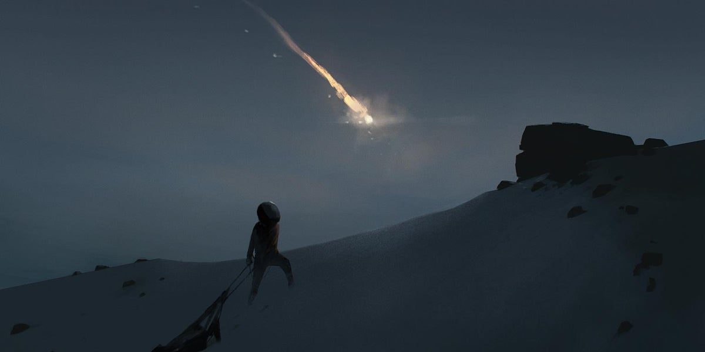

Lone Teaser Trailer Review
오랫동안 기다려온 플레이데드의 신작 Lone이 드디어 우리 앞에 모습을 드러냈습니다. Inside와 Limbo를 통해 독창적인 비주얼 스토리텔링을 선보였던 플레이데드는 이번 작품에서도 기대를 저버리지 않았습니다. Lone은 플레이데드 특유의 정교한 디테일과 차가운 미학을 이어가면서도, 또 한 번 새로운 감각을 불러일으키는 게임입니다.
첫인상에서 가장 눈에 띄는 것은 역시 비주얼 디테일입니다. 눈이 소복이 쌓인 설산, 공기 중에 부유하는 미세한 입자, 그리고 차가운 바람 속에서 반짝이는 햇살까지 — 모든 장면은 마치 예술 작품을 감상하는 듯한 완성도를 보여줍니다. 프레임 하나하나가 철저히 계산된 듯 정제되어 있으며, 이는 단순히 ‘게임 그래픽’의 수준을 넘어섰다고 해도 과언이 아닙니다.
또한 사운드 디자인 역시 깊은 인상을 남깁니다. 기묘하고 스산한 분위기를 자아내는 앰비언스와 실제 환경음을 그대로 옮겨놓은 듯한 폴리 사운드는 플레이어를 설산 속으로 완벽히 끌어들입니다. 발자국이 눈 위에 찍히는 소리, 바람이 귓가를 스치는 잔향은 단순히 배경음을 넘어, 마치 플레이어 자신이 그 세계에 존재하는 듯한 몰입감을 선사합니다.
게임의 시작은 단순하지만 강렬합니다. 끝없이 펼쳐진 눈 덮인 설산 위, 소년 홀로 서 있는 장면에서 이야기가 시작됩니다. 플레이어는 소년을 움직이며 앞으로 나아가야 하지만, 화면 속 풍경과 사운드가 끊임없이 던지는 불안감과 호기심은 “과연 이 아이는 어디로 가고 있는가?”라는 질문을 자연스레 떠올리게 합니다. 이는 플레이데드가 늘 보여주었던 특유의 내러티브 방식 — 직접적인 설명 없이도 플레이어가 이야기 속 의미를 스스로 찾아내도록 유도하는 — 의 연장선이라 할 수 있습니다.
[ 마찬가지로 아무런 지시사항이 없습니다. ]
Lone에는 별도의 게임 설명이나 내러티브 가이드가 존재하지 않습니다. 플레이어가 처음 마주하는 것은 단지 방향키와 스페이스바 사용법뿐입니다. 그 외의 모든 것은 직접 부딪히고 실패하면서 깨달아야 합니다. 이러한 접근은 플레이데드의 정체성과도 맞닿아 있으며, 플레이어가 단순한 관찰자가 아니라 ‘탐험자’로 자리하도록 만듭니다.
소년은 끊임없이 앞으로 나아갑니다. 플레이어는 길을 막는 장애물과 퍼즐을 마주하고, 이를 해결하며 점차 게임의 종착지로 향하게 됩니다. 퍼즐은 단순한 문제 풀이를 넘어, 세계의 구조와 그 안에 숨겨진 의미를 생각하게끔 설계되어 있습니다. 이 과정에서 Lone은 플레이데드가 지닌 특유의 디자인 철학 — 플레이어가 ‘직접 경험을 통해 의미를 찾아내도록 유도하는 것’ — 을 다시 한 번 강렬하게 증명합니다.
[ 외롭고, 고독하게, 앞으로 나아가며 ]
소년은 설산을 오르며 매순간 위험에 직면합니다. 커다란 물체들이 한순간에 폭발하고, 예상치 못한 위협들이 끊임없이 소년의 길을 가로막습니다. Lone은 단순히 퍼즐과 도전을 넘어, 이 외로운 소년의 심리 상태를 섬세하게 담아냅니다. 플레이어는 게임을 진행하며 단순한 재미를 넘어, 고독과 불안, 그리고 그 속에서 피어나는 희미한 희망 같은 감정적 울림을 함께 경험하게 됩니다.

결국 Lone은 플레이데드가 여전히 무언가를 직접 설명하지 않고도 깊은 이야기를 전할 수 있는 능력을 지녔음을 증명하는 작품입니다. 미니멀리즘을 유지하면서도 깊은 몰입감을 불러일으키는 연출, 죽음을 통해 배워나가는 학습 구조, 그리고 감정을 건드리는 독창적 내러티브. Lone은 플레이데드가 가진 정체성을 가장 순수한 형태로 보여주며, 동시에 앞으로 이들이 어떤 새로운 세계를 만들어낼지 기대하게 만듭니다.